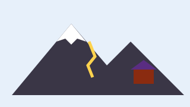

Campaign closed
We did not reach the goal: all donations have been returned. Thank you to everyone who supported us; we will propose the project again.
Surveys and sensors to understand which trails and huts in the Piedmont Alps are most exposed to landslides.
GeoAlp group · Department of Earth Sciences, University of Turin
Principal investigator: Ettore Barbero

As glaciers retreat, some rock faces become unstable. Busy huts and trails may be at risk.
The GeoAlp group wanted to survey ten slopes near mountain huts with laser scanners and displacement sensors and publish a map for hikers and hut managers.
| Budget item | Amount |
|---|---|
| Laser-scanner surveys | €2,500 |
| Displacement sensors | €2,000 |
| Interactive map | €1,000 |
| High-altitude travel | €500 |
| Total (goal) | €6,000 |
The campaign is closed: rewards can no longer be chosen. Below you can see how many people chose each one.
We did not reach the goal: all donations have been returned. Thank you to everyone who supported us; we will propose the project again.
Comments are published in the language they were written in.
Paolo F. · · Comment in Italian
Frequento il rifugio Quintino Sella da anni, progetto utilissimo.
Some of the supporters who chose to show their name:
Federica O., Marco B., Silvia P., Simone L., Giovanna T., Fabio D., Martina A., Paolo F. and 89 more people, some anonymous.